A Book Fell from the Sky 하늘에서 책이 떨어졌다
A comedy fantasy webtoon starring Halgakos, Glossarion's mascot. A delivery truck's brakes take a day off, a giant book lands on a translator, and she wakes up in Lettera, the world inside the book, where idioms come true literally. To get home she has to reach the Last Page.
Six chapters and an epilogue in 31 vertical strips. The comic was made in Korean for this site: the art was generated with an image model and the Korean lettering was set by script. Later, 16 bridge panels were added to 11 strips so that each scene leads into the next, the panel where the book lands in chapter 1 was redrawn, and faces and figures in a few other panels were fixed. Use the switch to read the Korean original or the English version; your place in the story is kept.
How the English version was made
- Every strip went through Glossarion's manga translator: it found the speech bubbles and captions, read the Korean, removed it from the art and lettered the English back in.
- The translation used a glossary of the cast's names and the story's terms (drafted by Glossarion's glossary generator from the strips, then corrected by hand), sent the page images along with the text, and ran on
gpt-6.1-solwith theManga_KRprompt. All text removal was done with Gemini Nano Banana 2.1 image edits, with no local inpainter. - The sound-effect boxes were loaded with the editor's Import OCR, since several are drawn into the art; everything else was found by Glossarion's own bubble detection.
- 76 lines were then corrected by hand in Glossarion's editor (missing text, mistranslations, glossary terms and character voices), then a second pass by hand rewrote 194 lines for natural English and each character's voice. The lines in the bridge panels were polished the same way. All of it was rendered again in the editor. Everything else is the tool's output.
- Sound effects stay in romanized Korean, as the
Manga_KRprompt asks. Some lettering is smaller than its bubble allows, and a few bubbles show faint traces of the removed text.
Chapter 1: The Day the Brakes Took a Break
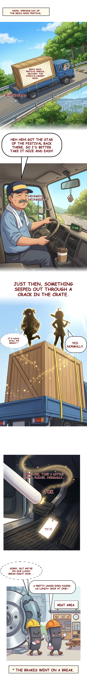
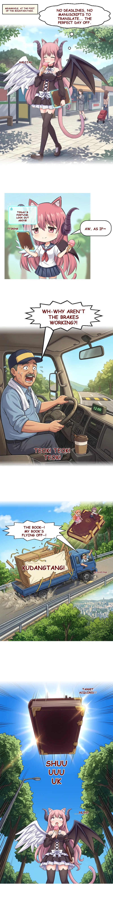
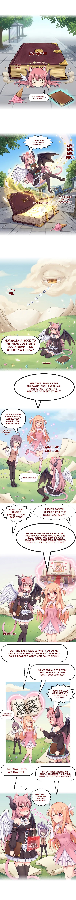
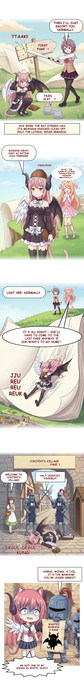
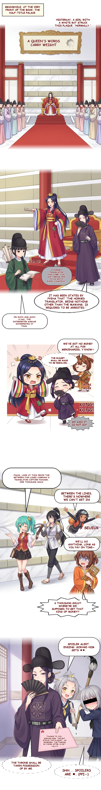
Chapter 2: The Contents Adventurers' Guild
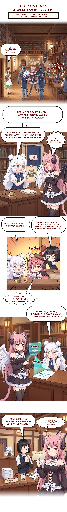
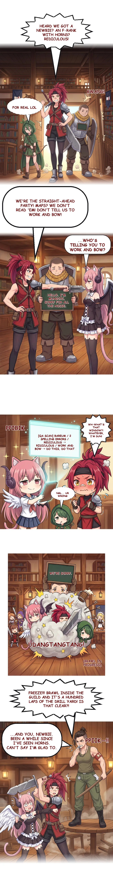
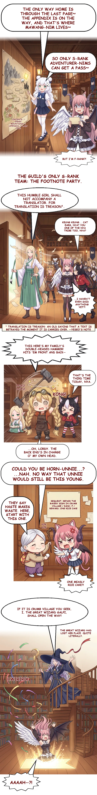
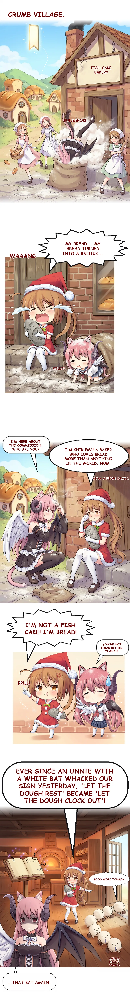
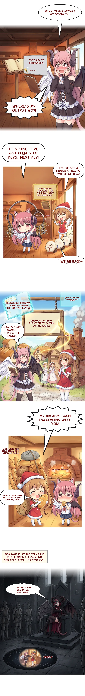
Chapter 3: The Crybaby Librarian's Undying Devotion
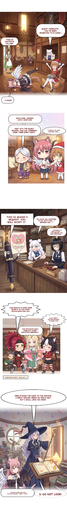
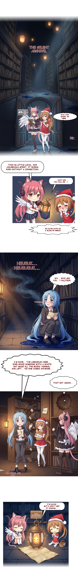
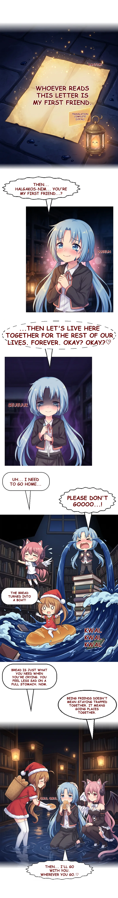
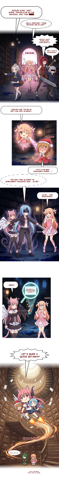
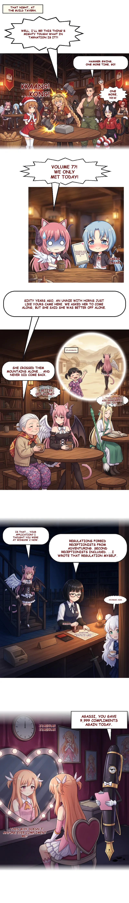
Chapter 4: A Lovely Trap
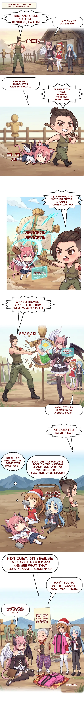
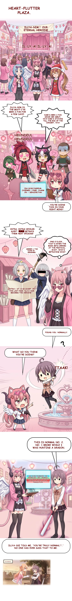
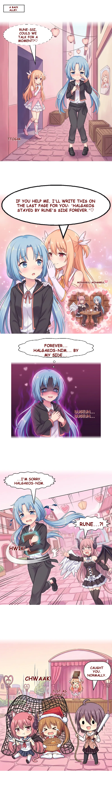
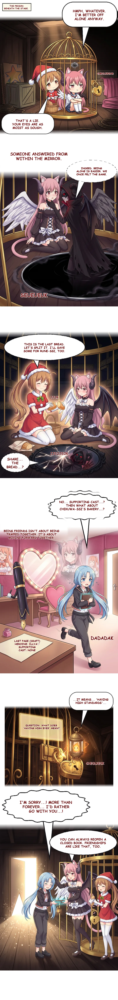
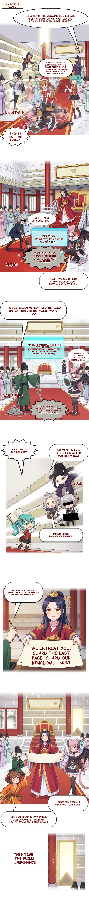
Chapter 5: The Other Halgakos
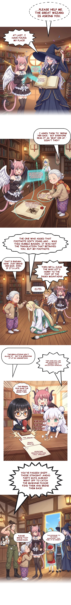
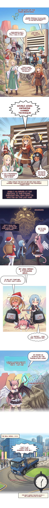
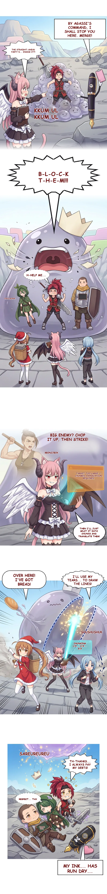
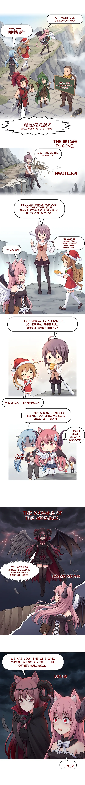
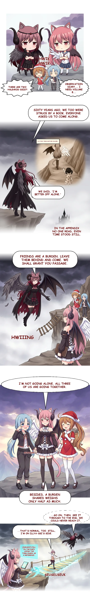
Chapter 6: The Last Page
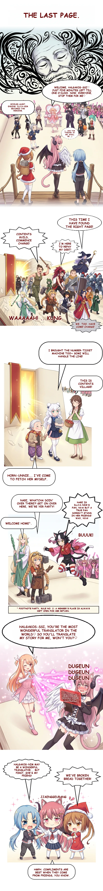
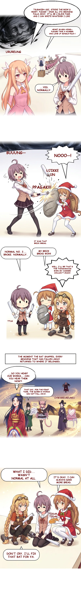
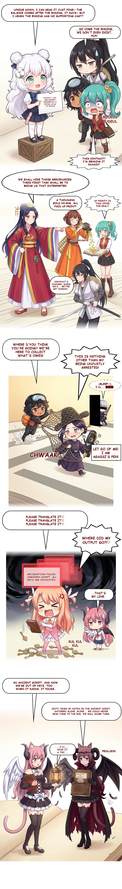
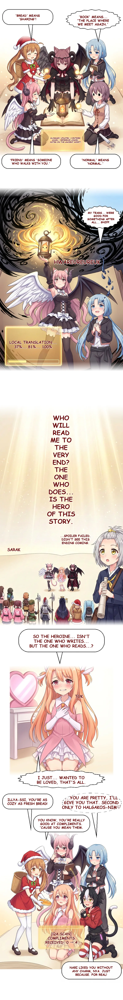
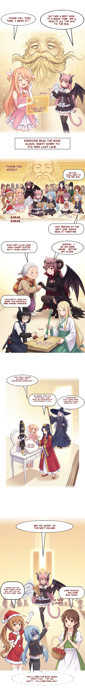
Epilogue
The end
Glossarion translates manga pages and webtoon strips the same way. It is free and open source: bring your own API key or run a local model.